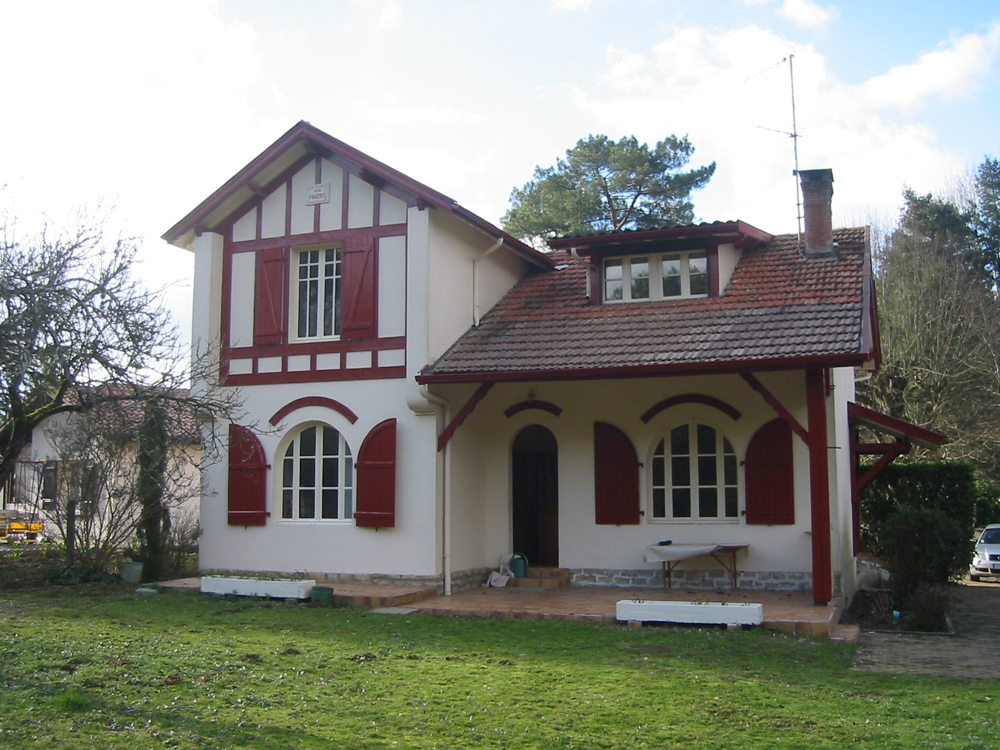

En famille ou entre amis, venez faire un séjour reposant ou dynamique dans notre gîte:

Promenade, tennis, équitation, pêche, ...
Océan à environ une demi-heure
Visites Culturelles (Chalosse, Dax, Bayonne, Pays Basque, ...)
Fêtes et Férias dans toute la région au cours de l'été